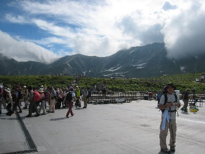
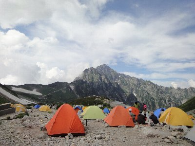
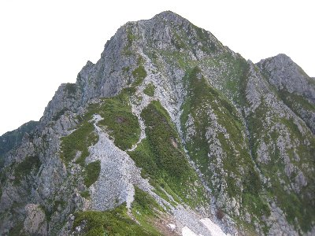
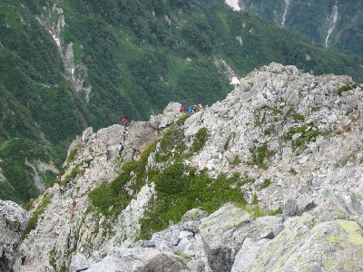
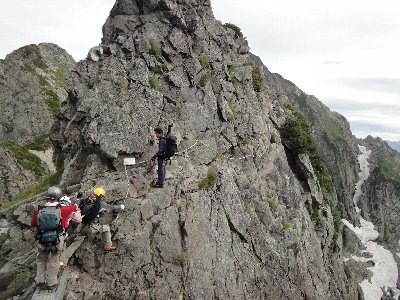
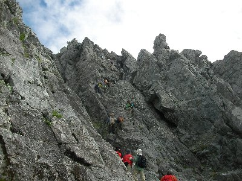
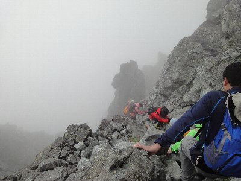
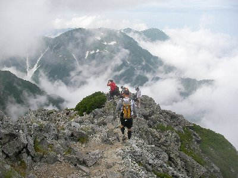

剱岳へ行こう！ | 2010年8月 |
|---|---|
| 「剱岳」映画にもなって有名な山ですよね。北アルプスにあるこの山は、岩ばかりで登ることが大変と言うことでも有名です。標高は2,999mと、ずば抜けて高いと言う訳ではないのですが、山頂への道は岩に阻まれ、三角点を設置するのも難しく、正確な標高を測ることも困難で、最近まで2998mでした。 「一般登山者が登る山のうちでは危険度の最も高い山」 と言われるほどで、鎖伝いに岩壁を登る「カニのタテバイ」、鎖伝いに岩壁を横移動する「カニのヨコバイ」が有名ですね。それらを通る室堂からの別山尾根ルートが一般的です。 こんな危ない山なのに人気は高く、中高年などが大挙におしよせて、危険な鎖場では順番待ちが生じます。 そんな山に、後輩が登りましょうと言ってきたので、経験浅い私も登る羽目になりました。今回は二人です。 まず、一般的な剱岳登山をご説明しましょう。 通常は、室堂から剣山荘もしくは剣沢小屋で一泊。剱岳を登ってもう一泊して、室堂に帰ります。二泊三日コースです。 今回は、後輩が土日しか休みがないため、剱沢小屋近くのキャンプ場でテント泊して、剱岳アタック後に室堂まで帰る、一泊二日の強行軍です。一日目に、立山も登ります。 《一日目》 室堂から立山三山を歩いて、剱沢キャンプ場へ。そこでテント泊。 標準タイム 約5時間 《二日目》 朝5時にテント場出発。別山尾根ルートにて剱岳へ。そのまま折り返して、テント撤収後、室堂へ。 標準タイム 約９時間 標準タイムで9時間ってマジですか！飯食う時間や、休憩時間は？ 途中の道は渋滞もあるって言うよ！今まで、標準時間9時間って、一日で歩いたことないじゃん！ | |
|  室堂から立山を見る |  テント場から剱岳（真正面） |
| 金曜日。仕事が終わった後に高速で、東名→名神→東海北陸道→北陸道で富山まで。今回は立山から入りました。 室堂は、通常一般の車では入ること出来ません。長野県の扇沢からトロリーバスやロープウェイを使って入るルート（黒部ダムを通る）と、富山県の立山からケーブルカーとバスを使って入るルートの二つしか有りません。扇沢からの方が料金高いので今回は立山に決めました。ガソリン代は掛るけど二人で割るとそれでもお得。高速代は今ならどちらも休日割引で1000円ですから。 まあ、扇沢からの方が混みそうだと言うのもありましたが。 途中渋滞もあって、立山に朝4時頃到着。 ≪一日目≫ 朝6時起床。って、まだ二時間しか寝てませんが・・・ケーブルカーとバスで室堂へ。 室堂を9時出発。立山に向かいます。立山と言っても雄山（3,003 m)、大汝山（3,015m)、富士ノ折立（2,999 m)の三つを合わせて立山と呼ぶらしく、三つ登らなければならないようです。まあ、近いんだけどね。繋がっているし。 立山は日本百名山の一つでもあり、日本三名山の一つでもあります。（また一つ百名山制覇） 雄山までは、小学生位の子供達で一杯。渋滞気味でした。 この日は天気が悪く、雨は降らないものの曇り空。立山から真砂岳、別山を登って16時頃にキャンプ地へ。 キャンプ地からは剱岳が良く見えて、ルートも見えます。あそこ登るの・・・？って道です。 ビール飲んで、カレー食って早々に就寝。 | |
 夜明けのテント場から剱岳 |  前剱から剱岳かな |
| ≪二日目≫ と言うか夜中。お腹が痛くなってきて眠れなくなる。何だろう？冷たい水にでも当ったか？正露丸を服用し、様子見るが２時頃まで痛くて眠れなかった。 そして3時45分に起こされる。腹は痛くないがどうしよう？と悩んでいると、私が行かないと後輩も行かない。と言うので仕方なく行く決心をする。まあ、今は痛くないから良いか・・・ すでに早い人たちは出発して、途中の一服剱付近にヘッドライトの明かりが見える。 暖かいスープとパンで朝食を取り、5時に出発。日は出ていないが大分明るくて、ヘッドライトは要らない。今日も曇り空だ。 ルートは、一服剱と前剱というピークを乗り越えて、剱岳に至るのだが、一服剱からむこうが、足場が不安定だったり、鎖場やハシゴになったりする。 起きぬけ朝一、しかも先ほどまでお腹が痛かったのに、鬼軍曹（後輩のこと。以下同じ）は休憩をめったに許さず、写真を撮るのも「写真撮ってると後詰りますから」とメッタ切り。後半は「休憩は順番待ちの時出来ますから」と、さらにヒートアップ。 彼のスケジュールでは、明日の仕事も考えて日付が変わらないうちに家に帰りたいようです。そりゃ〜厳しいって。 一服剱を超えると、道が険しいというか、危なっかしくなってきます。前剱を見上げると、山頂辺りは物凄い勾配のように見えます。一直線です。 行ってみればなんてことはないに決まってると、自分に言い聞かせ深く考えないようにします。 | |
 ふと振り返ると来た道が （真ん中の雪渓少し左がテント場） |  来た道を・・・人見えます？ |
| 前剱を超えると危険度アップです。鎖場出てきます。途中に金属製の橋が現れます。これ怖いです。（下記参照）岩をよじ登るような鎖場も出てきます。乗り越えると、そのまま向うに下ります。下が見えるので怖いです。 でも、怖いなんて言ってられません。登山者が一杯ですから、次から次へとクリアーしないと、後ろが詰ります。実際は怖いですよ。だって片側崖だもの。落ちたら痛いじゃ済まないもの。間違いなく富山県警ヘリコプター要請だもの。 なんて考えていたら、ヘリコプターが眼下遠くを通って行った。小さくてどこのヘリかは、分からなかったが。 いよいよ、カニのタテバイです。ゴツゴツしたほぼ垂直な岩壁に、真新しい鎖が張り渡してあります。そこをよじ登って行くのです。ここで20分待ち位の渋滞。 足がかりが有りそうでなさそうで。鎖を思いっきり掴みながら登りました。ホントは岩だけ掴んで、鎖は補助的だろうけど、かまってられない。そこからは頂上は10〜15分程度（だったかと） 山頂に到達出来た時は、「やったー。制覇したぞ」って気分です。8時40分。標準タイムより渋滞分時間掛ったかな。曇りで展望はなかったけど、満足感は最高です。（また一つ百名山制覇） | |
|  黒い人から右に伸びてる白っぽい 物が鎖です。右に行くんですよ！ |  よじ登っているのを上から |
| ここでも休憩は15分。鬼軍曹は写真タイムと水分補給の時間だけ与えてくれました。 下ると直ぐにカニのヨコバイ渋滞です。前に30名位の団体さんがいましたが、僕らが二人組だったせいか譲ってくれて、ここでの待ち時間は20分程度でした。カニのヨコバイは確かに怖いけど、そろそろ感覚がマヒしてきたのか、最高級の怖さは有りません。あ〜怖いね、さて行くか。って感じです。たぶん人が沢山居るので、大丈夫って思えるのでしょうね。二人だけで来たらビビりまくりだったと思いますよ。順番待ちのおばちゃんたちが、笑いながら話をしているのを聞くと、普通のことのように思えてきます。 それでも、油断は禁物。油断して滑落しちゃう人、結構いるようなので。 帰り道も休憩そこそこ、ガンガン下って11時半に剣山荘到着です。そこで昼食を取りました。中華丼美味しかった。でも、隣のテーブルではビールで乾杯してます。羨ましい〜。今日は車の運転あるから飲めないし、まだ4時間ほど歩かなきゃならないし。 昼食時間20分。さすが鬼軍曹です。「テント撤収時に休憩できるから」と無情にも出発。と言ってもテント場までは30分。（登りですが） テント撤収後、13時に剱沢キャンプ場を出発。朝5時出発からすでに8時間。ほとんど休みなく疲労もピーク。でも別山尾根まで登りです。結構きつい。 それでもそこそこの速度で登っていると思っていたら、鬼軍曹「なんかゆっくりですね」「体調悪いッスか」。え〜、これでも遅いのか！8時間歩きづめでへとへとです。 尾根まで登って休憩。鬼軍曹「（標準タイム１時間のところ）45分で来ました」・・・・・おいおい、遅くないじゃん！「遅いなんて言ってないッスよ」・・・・鬼だ・・・ここに鬼がいる。 そこからは下って、地獄谷を通って室堂へ。地獄谷からの登り階段が長すぎてきつい。背中のザックも重い。テント入ってるしね。地獄谷は15時半位。 階段でゼイハーゼイハー息を切らしていると、鬼軍曹は階段上から見下ろし、平然と「疲れたッスか？」・・・・って、ほぼ10時間半、歩き詰めなんですけど、・・・疲れたって良いじゃん！ 16時なんとか室堂到着。ほぼ11時間歩いたわけです。バス・ケーブルカー乗って、富山で晩飯（ラーメン）食べて帰路に着きました。高速での休息も一回のみ。静岡は雨の中、彼が車を降りたときに、ちょうど日付が変わる0時の時報が鳴りました。 そんな感じで、剱岳一泊二日は、なんとか可能ですが、時間に余裕がある方は、現地二泊が良いでしょう。 剱岳、今回は天気が悪く展望良くなかったですが、この山は「登った！」感が大切かと。 あ、今回は登った後に梅干しを食べたせいか、足が全く痛くなりませんでした。素晴らしい〜 | |
 真ん中辺りに人が見えます？ ここが「カニのタテバイ」です |  カニのタテバイを下から |
| これから行く人への参考になれば・・・ 前剱から剱岳は、登りと下りでルートが違う箇所が有ります。混雑しないためでしょう。間違ったルートを行くと、向うから人が来てバッティングしますので、気をつけて。特に鎖場付近では確認してください。プレートが有ります。 途中の金属製の橋（登り）： 正直コレが怖かった。山と山の谷間に幅30センチ位だろうか、橋が架かってますが、手すりも鎖も有りません。長さ２ｍ位の短い橋です。左右の谷間は落ちたら死亡コースです。下から風が吹くと正直帰りたくなります。覚悟決めて渡ると、直後に右の断崖絶壁を横に進むコースです。鎖を掴み足場を確認しながら進みましょう。帰りは通りません。 カニのタテバイ（登り）： 登っている時は下を見ない方が良いでしょう。上だけ見てください。下を見ると恐怖心が増します。途中で留まっていては大変です。写真で見ると傾斜が付いていそうですが、実際行くと垂直にしか見えません。足がかりが有ると言えば有るので、落ち着いて行けば大丈夫。 カニのヨコバイ（下り）： ヨコバイと言いながら、スタートは下に降りていきます。下を見ながら進むのでチョット怖いです。しかも、そこで順番待ちです。ヨコになったとき、断崖絶壁から身を乗り出し（鎖は掴んでね）、下を見るとヨコに走る割れ目が見えます。コレが足がかりです。鎖を掴みながら崖に身を投げ出し、ズリズリと足を下に降ろしていき、足先で裂け目を探してください。腰が引けていると足がかりは見つかりません。身を伸ばせば、足が裂け目に引っかかるでしょう。そしたら後は楽です。 危険箇所以外： 色々なホームページでも書いてあるように、危険箇所では、みなさん緊張して滑落することは少ないようです。 しかし、全体に道幅は狭く、片方は崖です。浮き石も多く、岩に砂が掛かっていて滑りやすくもなっています。滑ったら滑落です。実際、その様な場所での滑落事故が多いようです。剣山荘から向こうは、気を引き締めて行ってください。 特に、帰りのカニのヨコバイを過ぎると、安心からか、慣れか、行きは危ないと思っていた場所も、怖くなくなっています。危険です。 崖じゃ無いところで転んでも、岩でかなり痛そうです。 | |
|  下りの「カニのヨコバイ」 下ってるんですよ！ |  帰りの前剱あたり |
| 写真：べっしー ＆ Y鬼軍曹 、 コメント：べっしー | |